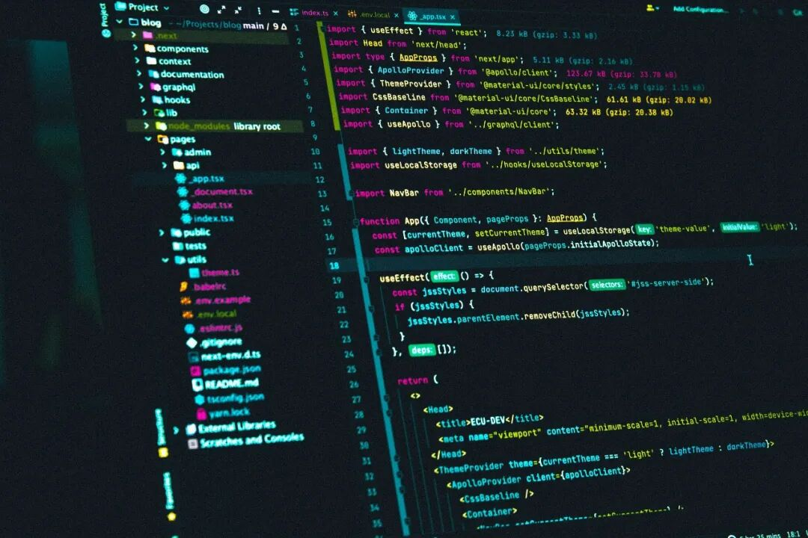

说来惭愧，我用了好几年 async/await，直到某次被一个极其离谱的生产 bug 毒打之后，我才不得不承认一个扎心的事实：我压根就没读懂它。
那时候的我，代码基本靠“复制粘贴”，看到异步就习惯性套个 await。代码跑通了就万事大吉，至于为什么报错、为什么会出现竞态条件，我心里完全没底。
这种不求甚解让我付出了惨痛的代价：
那些莫名其妙的静默失败。 各种诡异的 Race Conditions。 还有那些在用户屏幕上转个不停、死活不消失的 Loading 图标。
如果你也曾对着屏幕抓耳挠腮：
“为什么这个 Promise 居然执行了两次？”
“为什么这行代码没按顺序跑？” 甚至 “我的 try/catch 为什么抓不住这个报错？”
那么相信我，这篇复盘就是为你准备的。
那个流传已久的技术谎言
几乎所有的入门教程都会告诉你：async/await 只是让 Promise 写起来更清爽的手段。
这句话怎么说呢，属于那种正确的废话。它在技术上没毛病，但在实践中极其容易把人带进坑里。因为 async/await 压根没有改变 JavaScript 的底层逻辑，它只是改变了我们“自以为”它在怎么工作。这种认知偏差，就是所有 bug 的温床。
当你在写 async 时，到底在写什么？
只要你在一个函数前面加上 async，两件事就会雷打不动地发生：
这个函数 永远 会返回一个 Promise。 JavaScript 只会“暂停”这一个函数，而不是整个程序。
举个最简单的例子：
async function getData() {return 42;}console.log(getData());
你以为控制台会打印 42？天真了。它打印出来的是
Promise {<fulfilled>: 42}。 永远是 Promise，绝不可能是 42。 记住这一点，你就能绕开网上至少一半的异步坑。
await 才不是你想象中的“等待”
很多人脑子里都有个误区：await 会让程序在那儿停下来等着。 大错特错。
它只是暂停了“当前这个函数”的执行，JavaScript 引擎转头就去忙别的事了，它可不会为了你这几行代码让整个 Runtime 停工。
你看这段代码的执行顺序，绝对能让不少人血压飙升：
console.log("Start");async function test() {await Promise.resolve();console.log("Inside async");}test();console.log("End");
最后出来的结果是：
StartEndInside async
为什么？因为 await 实际上是把函数“切断”了，它把剩下的逻辑打包成了一个 microtask（微任务）丢到了后面，然后立刻归还了控制权。这就是为什么你的 UI 还能响应，也是为什么你的代码顺序经常乱跳。
那个被无数人踩过的史诗级大坑
我在生产环境里见过最多次的翻车现场，长这样：
users.forEach(async (user) => {await saveUser(user);});
看起来逻辑完美，跑起来也不报错，但实际上它在后台“死”得很安静。因为 forEach 根本不鸟异步函数，它根本不会等你，直接一波流推过去。
正确的姿势只有两种：
如果你需要按顺序来，请用 for...of 循环。
for (const user of users) {await saveUser(user);}
如果你想追求速度且允许并发，请用 Promise.all。
await Promise.all(users.map(saveUser));
就这一个细节的改动，能帮你们团队省下至少几天的调优时间。
为什么你的 try/catch 总是捉个寂寞？
还有一个常年被吐槽的问题：“我的 catch 块明明写了，报错怎么就漏过去了？” 看看你是不是这样写的：
try {doSomethingAsync(); // 没写 await！} catch (e) {console.error(e);}
如果没有 await，这个错误对 try/catch 来说就是隐身的。除非你老老实实地加上 await，否则那些异步报错就像幽灵一样，绕过你的防线直接搞崩你的进程。
try {await doSomethingAsync();} catch (e) {console.error(e);}
重新构建你的大脑模型
别再想什么“JavaScript 在这里等一下”了。 从今天开始，请你在心里默念：“JavaScript 把这个函数的剩下部分排到了后面再执行”。
await 不是阻塞，它其实是一种让出。 一旦你接受了这个设定，代码的执行顺序就不再是玄学，Race Conditions 也会变得有迹可循。
我的一条铁律
如果你没有明确写下 await，那就默认它会像断了线的风筝一样独立运行。 这个原则帮我避开了无数“在我电脑上明明是好的”这种玄学灾难。
说到底，大部分的异步 bug 都不是因为逻辑太复杂，而是源于我们的“迷之自信”。 async/await 用起来确实爽，但 JavaScript 的执行模型从来不简单。
当你开始敬畏每一行异步代码，开始理解底层的微任务调度时，你的代码才会真正变得稳如老狗。
如果你也曾被异步代码坑过，别怀疑，你并不笨，你只是被最初的那个简化版模型给误导了。
